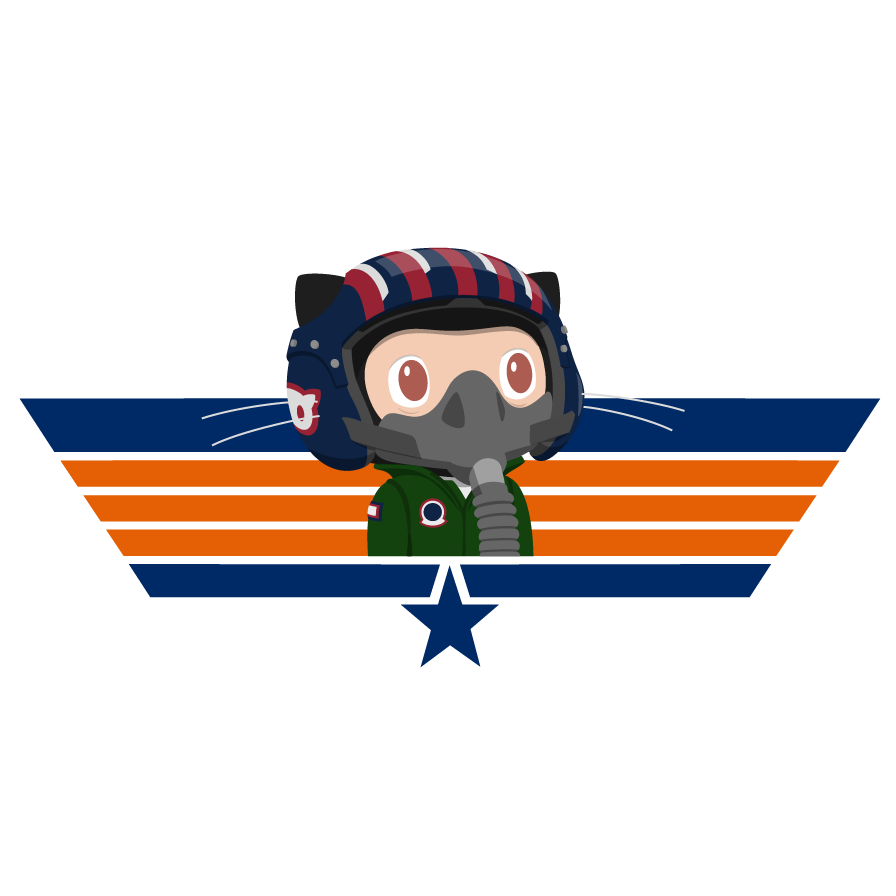

Aprendendo Sobre o Git
Entenda o que é o Software de Versionamento Git e como ele pode ajudar uma equipe de programadores envolvidos em um projeto.

Acesse
Curso de Git e GitHub
Acesse as aulas, materiais e referências para aprender controle de versões e colaboração com Git e GitHub.
Entenda o que é o Software de Versionamento Git e como ele pode ajudar uma equipe de programadores envolvidos em um projeto.

Aprenda sobre o que é o GitHub e como ele pode ser um excelente aliado na sua carreira profissional.
Instale os principais softwares na sua máquina para que você possa fazer uso do Git e do GitHub de forma versátil.
Aprenda a criar o seu primeiro repositório e como você pode trabalhar como ele usando o Git, GitHub Desktop e o Visual Studio Code.
Aprenda a hospedar o seu site gratuitamente usando um recurso chamado GitHub Pages.
Aprenda dois recursos interessantes do GitHub que permitem outros usuários se tornarem colaboradores em projetos alheios.
Aprenda os métodos da Linguagem de Marcação Markdown para personalizar documentos compatíveis com o GitHub.